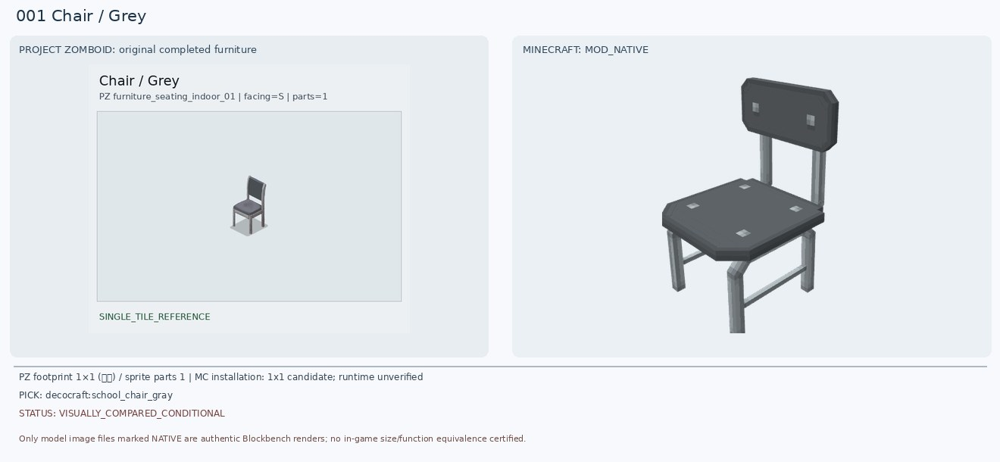
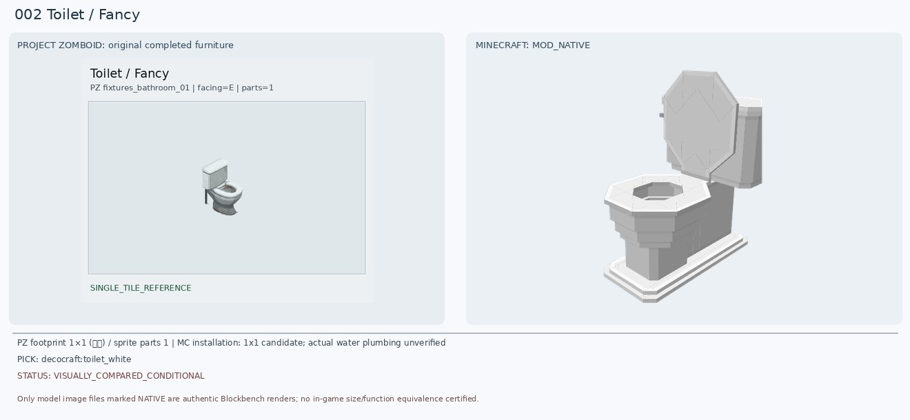
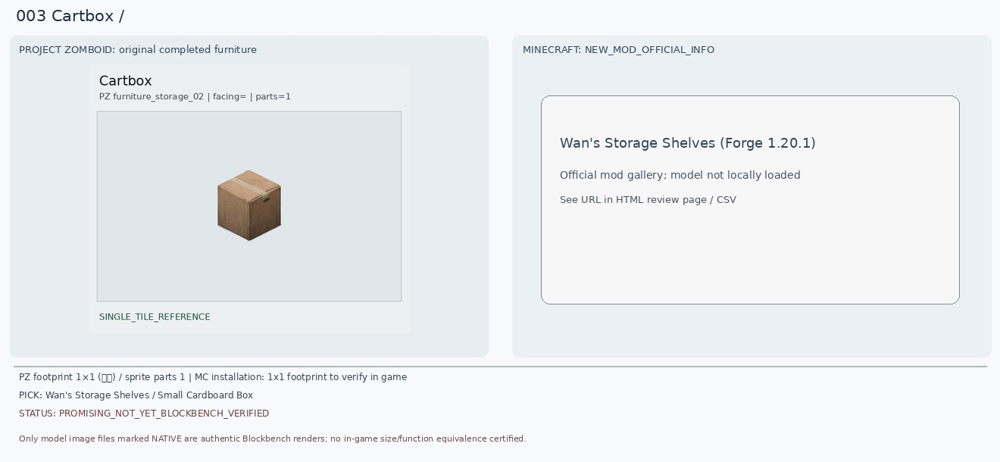
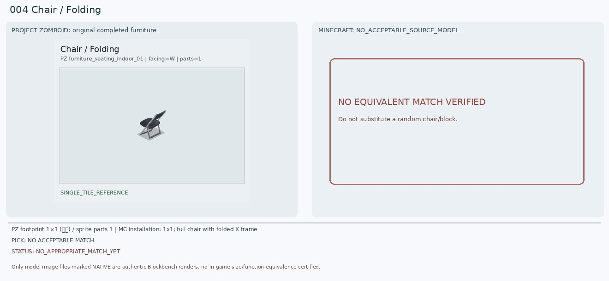
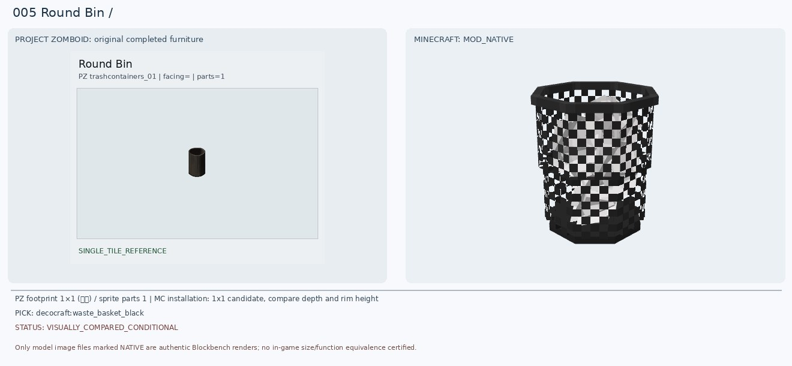
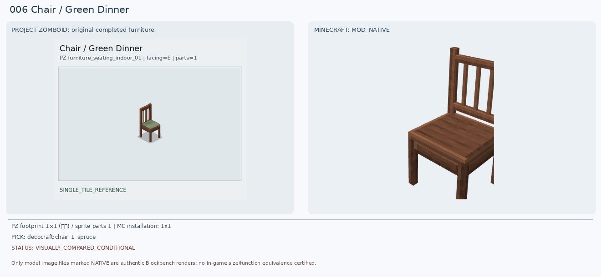
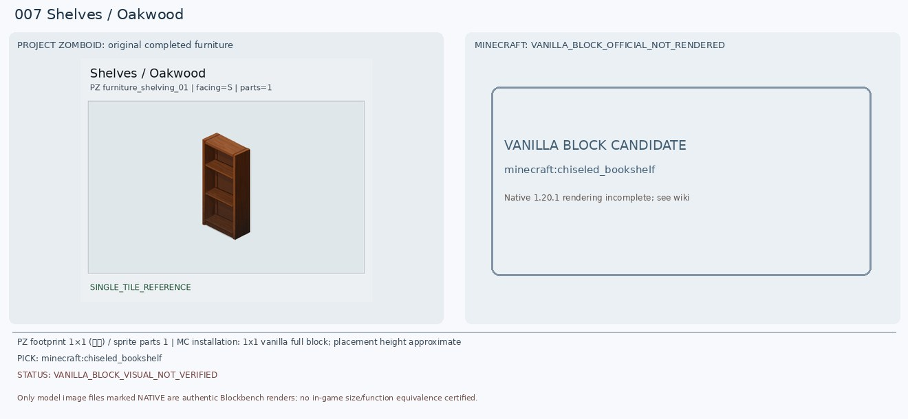
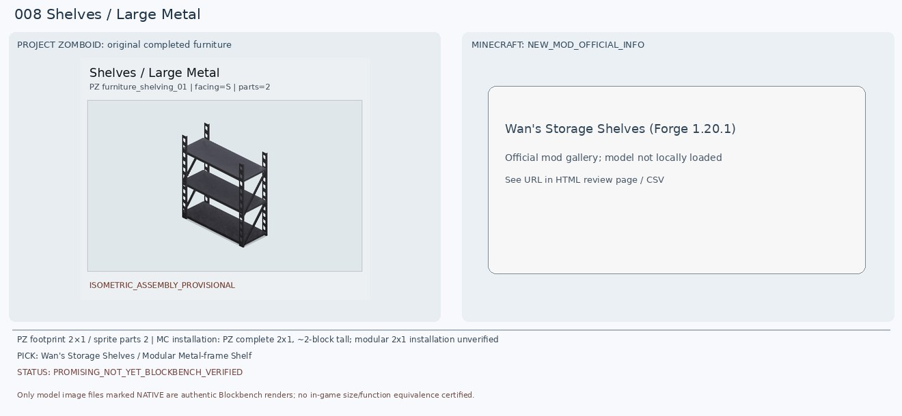
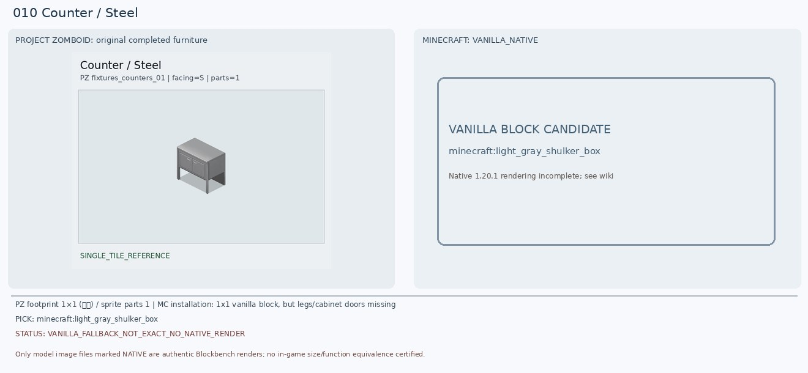

1. Chair / Grey
새 후보: decocraft:school_chair_gray
보조 후보: decocraft:diner_chair_gray
판정: VISUALLY_COMPARED_CONDITIONAL
원본 형태: metal frame; backrest; 4 legs; dark padded seat
크기: PZ 1×1 (임시) / 1x1 candidate; runtime unverified
이유: 금속 다리·등받이·어두운 시트라는 특징은 공통이지만 원본 등받이와 좌면 두께·지지대 모양이 다름. 이전 school chair도 무조건 확정하지 않음.
원본 타일 속성
{"BedType": ["badBed"], "BlocksPlacement": [""], "CanScrap": [""], "CustomName": ["Chair"], "Facing": ["S"], "GroupName": ["Grey"], "IsLow": [""], "IsMoveAble": [""], "Material": ["MetalScrap"], "Material2": ["PlasticHard"], "MaterialType": ["Metal_Light"], "PickUpWeight": ["75"], "ScrapSize": ["Small"], "SeatMaterial": ["Metal"], "Surface": ["17"], "bed": [""], "chairS": [""]}
2. Toilet / Fancy
새 후보: decocraft:toilet_white
보조 후보: pfm:basic_toilet
판정: VISUALLY_COMPARED_CONDITIONAL
원본 형태: white flush toilet with tank & basin; plumbing/water interaction
크기: PZ 1×1 (임시) / 1x1 candidate; actual water plumbing unverified
이유: 흰 도기·뒤 물탱크·둥근 변기 볼 구조를 재확인. 이전 Paladin 모드는 일부 부품만 렌더됐으며 Decocraft 흰 변기는 실제 완성 모델을 로드. 뚜껑/탱크 비율이 다름.
원본 타일 속성
{"BlocksPlacement": [""], "CanBreak": [""], "CanScrap": [""], "CustomName": ["Toilet"], "Facing": ["E"], "GroupName": ["Fancy"], "IsLow": [""], "IsMoveAble": [""], "Material": ["Plumbing"], "Material2": ["Pipes"], "MaterialType": ["Ceramic"], "MoveType": ["WallObject"], "PickUpTool": ["Wrench"], "PickUpWeight": ["100"], "PlaceTool": ["Wrench"], "ScrapSize": ["Small"], "SeatMaterial": ["Plastic"], "attachedW": [""], "bed": [""], "waterAmount": ["20"], "waterMaxAmount": ["20"], "waterPiped": [""]}
3. Cartbox
새 후보: Wan's Storage Shelves / Small Cardboard Box
보조 후보: minecraft:brown_shulker_box
판정: PROMISING_NOT_YET_BLOCKBENCH_VERIFIED
원본 형태: taped plain brown cardboard box; 25 storage capacity
크기: PZ 1×1 (임시) / 1x1 footprint to verify in game
이유: 기존 크레용 상자는 완전히 부적합. Wan 모드의 작은 종이상자는 마크 1.20.1 Forge 지원 및 25칸 수납이 공식 소개로 확인됨; PZ 원본도 ContainerCapacity 25. 상자 단독 바닥 배치와 모델 블록 ID는 추가 검증해야 함. 바닐라 갈색 셜커 상자는 27칸으로 기능 대안이지만 테이프 표현은 없음.
Wan’s Storage Shelves 공식 모드 및 갤러리공식 홍보 이미지 확인(게임 화면이 아닌 합성 홍보 이미지)

원본 타일 속성
{"BlocksPlacement": [""], "CanScrap": [""], "ContainerCapacity": ["25"], "ContainerCloseSound": ["CardboardLargeClose"], "ContainerOpenSound": ["CardboardLargeOpen"], "ContainerPosition": ["Low"], "ContainerPutSound": ["CardboardLargeTransferItem"], "ContainerTakeSound": ["CardboardLargeTransferItem"], "CustomName": ["Cartbox"], "IsLow": [""], "IsMoveAble": [""], "IsStackable": [""], "IsTable": [""], "Material": ["Paper"], "PickUpWeight": ["20"], "Surface": ["32"], "container": ["cardboardbox"], "solidtrans": [""]}
4. Chair / Folding
새 후보: 일치품 없음
보조 후보: Blockables Chairs / folding stool (NOT equivalent)
판정: NO_APPROPRIATE_MATCH_YET
원본 형태: portable folding chair with crossed tubular metal legs and backrest
크기: PZ 1×1 (임시) / 1x1; full chair with folded X frame
이유: 기존 가죽 안락의자는 접이식 의자와 형태·용도가 다름. Blockables - Chairs의 folding stool은 등받이가 없어 동일하지 않음. 제시한 모드 및 바닐라 블록 조합만으로 1x1 안에 X자 금속 프레임/좌석/등받이를 정확 재현한 후보는 미검증. 별도 모드 탐색 또는 Blockbench 커스텀 필요.
원본 타일 속성
{"BedType": ["badBed"], "BlocksPlacement": [""], "CanScrap": [""], "CustomName": ["Chair"], "Facing": ["W"], "GroupName": ["Folding"], "IsLow": [""], "IsMoveAble": [""], "Material": ["MetalScrap"], "Material2": ["PlasticHard"], "MaterialType": ["Metal_Light"], "PickUpWeight": ["75"], "ScrapSize": ["Small"], "SeatMaterial": ["Metal"], "Surface": ["17"], "bed": [""], "chairW": [""]}
5. Round Bin
새 후보: decocraft:waste_basket_black
보조 후보: minecraft:cauldron
판정: VISUALLY_COMPARED_CONDITIONAL
원본 형태: open-top round black solid-body bin, 10 capacity
크기: PZ 1×1 (임시) / 1x1 candidate, compare depth and rim height
이유: PZ는 검은색 원통형 솔리드 쓰레기통. 새 Decocraft 검정 원통형 쓰레기바구니는 실물 형태 유사하나 그물망 격자가 보여 재질 불일치; 바닐라 가마솥은 입구가 열려 있지만 네모 형태라 차선책.
원본 타일 속성
{"BlocksPlacement": [""], "CanScrap": [""], "ContainerCapacity": ["10"], "ContainerPutSound": ["BinPlasticTransferItem"], "ContainerTakeSound": ["BinPlasticTransferItem"], "CustomName": ["Round Bin"], "FitsBeneathCountertop": [""], "IsLow": [""], "IsMoveAble": [""], "IsTrashCan": [""], "Material": ["MetalScrap"], "Material2": ["PlasticBag"], "PickUpWeight": ["50"], "container": ["bin"]}
6. Chair / Green Dinner
새 후보: decocraft:chair_1_spruce
보조 후보: decocraft:diner_chair_green
판정: VISUALLY_COMPARED_CONDITIONAL
원본 형태: brown wooden 4-leg dining chair, vertical slat back, green cushion
크기: PZ 1×1 (임시) / 1x1
이유: Green Dinner는 목재 프레임·세로 등받이 살·녹색 방석. 기존 초록 안락의자는 기각. Spruce 의자는 목재 프레임과 등받이가 비슷하지만 녹색 방석이 없고, diner_chair_green은 방석 색상은 비슷하나 금속 프레임이어서 최종 승인 보류.
원본 타일 속성
{"BedType": ["badBed"], "BlocksPlacement": [""], "CanScrap": [""], "CustomName": ["Chair"], "Facing": ["E"], "GroupName": ["Green Dinner"], "IsLow": [""], "IsMoveAble": [""], "Material": ["Wood"], "Material2": ["Screws"], "MaterialType": ["Wood"], "PickUpWeight": ["75"], "ScrapSize": ["Small"], "SeatMaterial": ["Wooden"], "Surface": ["17"], "bed": [""], "chairE": [""]}
7. Shelves / Oakwood
새 후보: minecraft:chiseled_bookshelf
보조 후보: Wan's Storage Shelves / Oak Shelf
판정: VANILLA_BLOCK_VISUAL_NOT_VERIFIED
원본 형태: open oak-brown storage bookshelf with 3 shelves, 40 capacity
크기: PZ 1×1 (임시) / 1x1 vanilla full block; placement height approximate
이유: 기존 Handcrafted acacia_shelf는 렌더가 막힌 진열장처럼 보여 원본의 빈 3단 목제 개방형 선반과 다름. 바닐라 빈 조각된 책장은 2열x3행 슬롯을 제공해 선반 구획·재질이 더 가까우나 PZ는 가로로 긴 3개 층이고 임의 물품 수납 기능도 다름. 새 모드의 오크 선반 모델 재검증 가능.
바닐라 블록 실제 외형과 속성 확인 (Minecraft Wiki)원본 타일 속성
{"BlocksPlacement": [""], "CanBreak": [""], "CanScrap": [""], "ContainerCapacity": ["40"], "ContainerPutSound": ["ShelfWoodTransferItem"], "ContainerTakeSound": ["ShelfWoodTransferItem"], "CustomName": ["Shelves"], "Facing": ["S"], "GroupName": ["Oakwood"], "IsMoveAble": [""], "Material": ["Wood"], "Material2": ["Screws"], "MaterialType": ["Wood"], "PickUpTool": ["Hammer"], "PickUpWeight": ["200"], "PlaceTool": ["Hammer"], "ScrapSize": ["Large"], "Surface": ["80"], "container": ["shelves"], "solid": [""]}
8. Shelves / Large Metal
새 후보: Wan's Storage Shelves / Modular Metal-frame Shelf
보조 후보: minecraft:iron_trapdoor + iron_bars [SCHEMATIC ONLY]
판정: PROMISING_NOT_YET_BLOCKBENCH_VERIFIED
원본 형태: 2x1 steel industrial 3-tier warehouse rack, no doors, support struts
크기: PZ 2×1 / PZ complete 2x1, ~2-block tall; modular 2x1 installation unverified
이유: 원본은 두 스프라이트로 조립된 폭 2칸, 높이 약 2칸 금속 3단랙. Wan 공식 이미지에는 검정/남색 금속 프레임과 3단 선반이 있어 기존 빈칸보다는 좋은 후보. 다만 나무판 재질·모듈의 실제 연결 폭은 달라서 2칸 배치/적재 가능 여부 확인 전 최종 확정 금지. 바닐라 철 덫문+쇠창살 조합은 같은 블록공간을 공유하기 어려워 외형 대안 검증 전.
Wan’s Storage Shelves 공식 모드 및 갤러리공식 홍보 이미지 확인(게임 화면이 아닌 합성 홍보 이미지)
원본 타일 속성
{"BlocksPlacement": [""], "CanBreak": [""], "CanScrap": [""], "ContainerPutSound": ["ShelfMetalTransferItem"], "ContainerTakeSound": ["ShelfMetalTransferItem"], "CustomName": ["Shelves"], "Facing": ["S"], "GroupName": ["Large Metal"], "IsMoveAble": [""], "ItemHeight": ["65"], "Material": ["MetalPlates"], "Material2": ["MetalBars"], "MaterialType": ["Metal_Light"], "PickUpLevel": ["2"], "PickUpWeight": ["200"], "SpriteGridPos": ["0,0", "1,0"], "container": ["metal_shelves"], "solidtrans": [""]}9. Chair / Wooden
새 후보: decocraft:chair_1_spruce
보조 후보: decocraft:chair_1_oak
판정: VISUALLY_COMPARED_CONDITIONAL
원본 형태: plain dark wood 4-leg dining chair; simple curved top backrest
크기: PZ 1×1 (임시) / 1x1
이유: 기존 Paladin oak_chair_classic_black은 좌석/등받이 등 일부가 사라진 부품 불완전 렌더라 반려. Decocraft spruce 실제 Blockbench 완성 모델은 어두운 갈색 나무의자 4다리지만 PZ는 상단 가로판 위주인 간단한 등받이여서 유사도 미완벽.
원본 타일 속성
{"BedType": ["badBed"], "BlocksPlacement": [""], "CanScrap": [""], "CustomName": ["Chair"], "Facing": ["S"], "GroupName": ["Wooden"], "IsLow": [""], "IsMoveAble": [""], "Material": ["Wood"], "Material2": ["Nails"], "MaterialType": ["Wood"], "PickUpWeight": ["75"], "ScrapSize": ["Small"], "SeatMaterial": ["Wooden"], "Surface": ["17"], "bed": [""], "chairS": [""]}
10. Counter / Steel
새 후보: minecraft:light_gray_shulker_box
보조 후보: minecraft:iron_block [visual fallback]; CUSTOM_BLOCKBENCH_MAY_BE_NEEDED
판정: VANILLA_FALLBACK_NOT_EXACT_NO_NATIVE_RENDER
원본 형태: short stainless steel two-door cabinet with four legs and open bottom, 1x1 footprint
크기: PZ 1×1 (임시) / 1x1 vanilla block, but legs/cabinet doors missing
이유: PZ는 낮은 철제 2도어 카운터와 4개의 다리, 하부 공간. 기존 적합 후보 미발견. 실버/라이트그레이 셜커 상자는 금속 느낌·1x1 크기·수납이라는 점에서 실용적 임시대체지만 정면 문 두 개와 다리를 표현하지 못함. Decocraft 하부장은 목재 상판이라 재질 차이가 큼. 정확 외형 유지하려면 별도 철제 카운터 모델 탐색/제작.
원본 타일 속성
{"BlocksPlacement": [""], "CanBreak": [""], "CanScrap": [""], "ContainerCloseSound": ["DoorMetalSmallClose"], "ContainerOpenSound": ["DoorMetalSmallOpen"], "ContainerPosition": ["Low"], "ContainerPutSound": ["DoorMetalSmallTransferItem"], "ContainerTakeSound": ["DoorMetalSmallTransferItem"], "CountertopAttach": [""], "CustomName": ["Counter"], "Facing": ["S"], "GenericCraftingSurface": ["true"], "GroupName": ["Steel"], "IsLow": [""], "IsMoveAble": [""], "IsTable": [""], "Material": ["MetalPlates"], "Material2": ["Screws"], "PickUpLevel": ["2"], "PickUpTool": ["Hammer"], "PickUpWeight": ["200"], "PlaceTool": ["Hammer"], "Surface": ["35"], "container": ["counter"], "solidtrans": [""]}